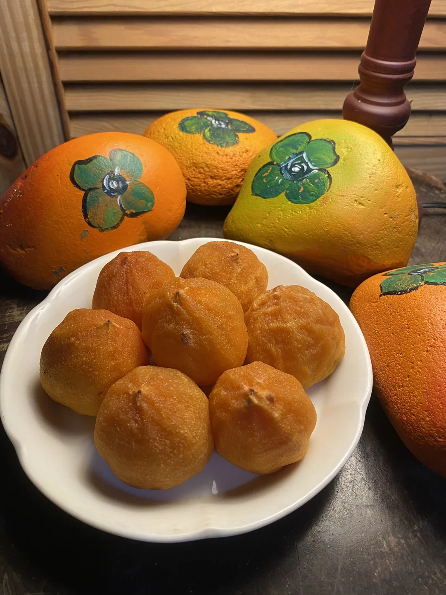
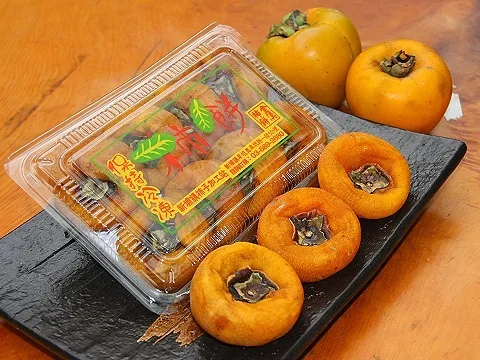
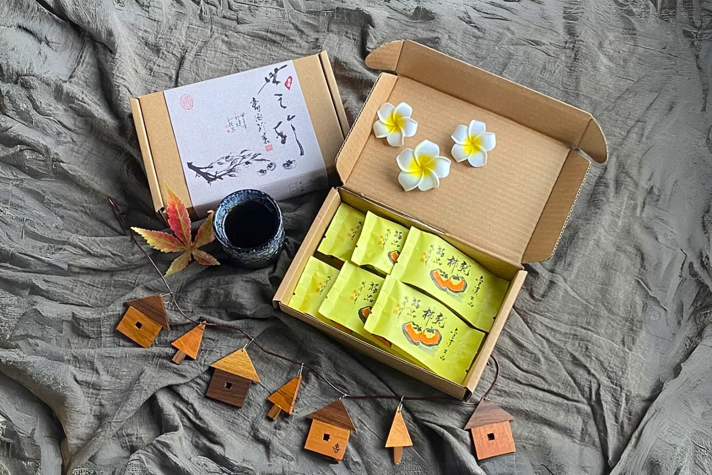

柿餅
橙紅色澤、柔軟帶彈性，是最常見也最容易入口的日曬滋味。

Taste of the season
含水量、熟成時間與製作方式不同，讓每一種柿製品留下自己的色澤、香氣與口感。
風味比較
從柔軟飽滿到紮實耐嚼，可依喜歡的口感與使用方式選擇。

柿餅・柔軟有彈性 柿乾・紮實耐嚼
柿乾・紮實耐嚼Three textures
橙紅色澤、柔軟帶彈性，是最常見也最容易入口的日曬滋味。
含水量較低，表面白色結晶是果糖自然析出形成的柿霜，口感更紮實耐嚼。
保留較多水分與飽滿果肉，同時帶有柿餅香氣與紅柿般的柔嫩質地。

送禮選擇
「柿之珍」精裝版挑選果實並採單顆包裝，搭配手工紙盒；分享版保留相同品質，以較精簡的包裝適合家人朋友一起品嚐。

保存與食用
柿製品含水量不同，開封後請盡快食用。若要延長保存，建議保持密封並放入冷凍。
| 方式 | 溫度 | 參考期限 |
|---|---|---|
| 冷凍 | −18°C | 約 12 個月 |
| 冷藏 | 0–7°C | 約 5 天 |
| 常溫 | 陰涼處 | 約 2 天 |
以上依原有網站資料整理；實際保存期限請以商品包裝標示為準。
Online shop
線上賣場會顯示當期可購買的品項、價格與配送方式。